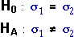
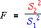
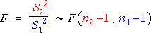
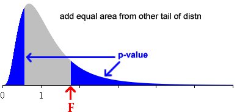
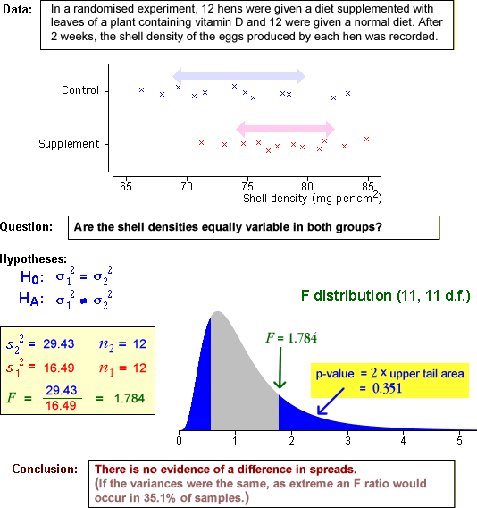

P-value
Formally, we are testing the hypotheses,

using the test statistic

If the null hypothesis holds, this test statistic has a known distribution with no unknown parameters,

The p-value for the test is the probability of obtaining a 'more extreme' value from this F distribution.

Note that the test is a 2-tailed one — both very small and very large F ratios throw doubt on equal standard deviations. We therefore double the tail area that is obtained from the F distribution.
Examples
The diagram below shows a few data sets and uses an F test to assess whether the group variances are the same.
